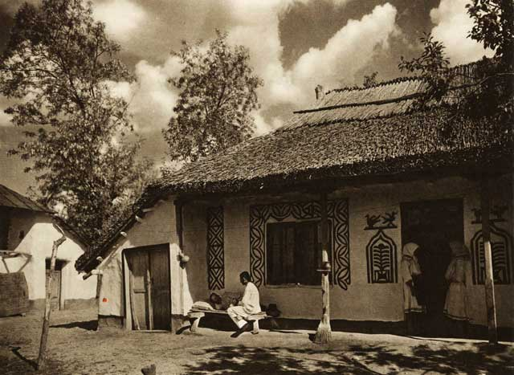
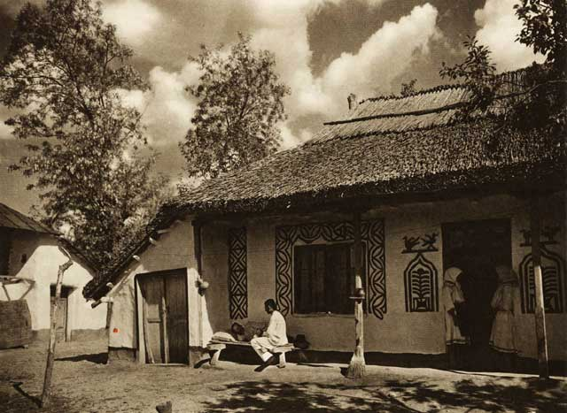

Casa Traditionala 1

Casa Traditionala 2
Casa Traditionala 3
Cazinoul din Constanta
Istoria arhitecturii în România debutează cu apariția primelor construcții și structuri de pe teritoriul țării noastre, din perioada civilizației dace, la care s-au adăugat ulterior inovațiile tehnologiei romane. În perioada Evului Mediu, tehnica și arta construcțiilor bisericești evoluează în paralel cu cea a edificiilor laice (castele, palate) în diverse stiluri specifice românești, pentru ca în perioada modernă să se realizeze sincronizarea cu stilurile europene. Epoca contemporană este ilustrată de clădiri și structuri de mari dimensiuni, atât civile, cât și industriale, multe din acestea constituindu-se ca adevărate obiective turistice și ca simboluri ale identității naționale.
In aceasta pagina informativa vom incerca sa va educam asupra arhitecturii traditionale, moderne si asupra unor arhitecti din Romania.
Ateneul Roman
Ateneul Roman interior
Palatul Culturii Iasi
Palatul Culturii interior
Casa Traditionala 1
Casa Traditionala 2
Casa Traditionala 3
Cazinoul din Constanta